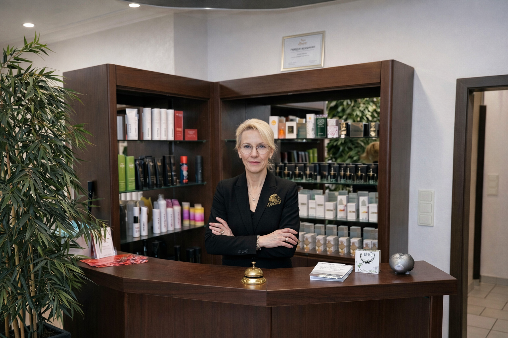
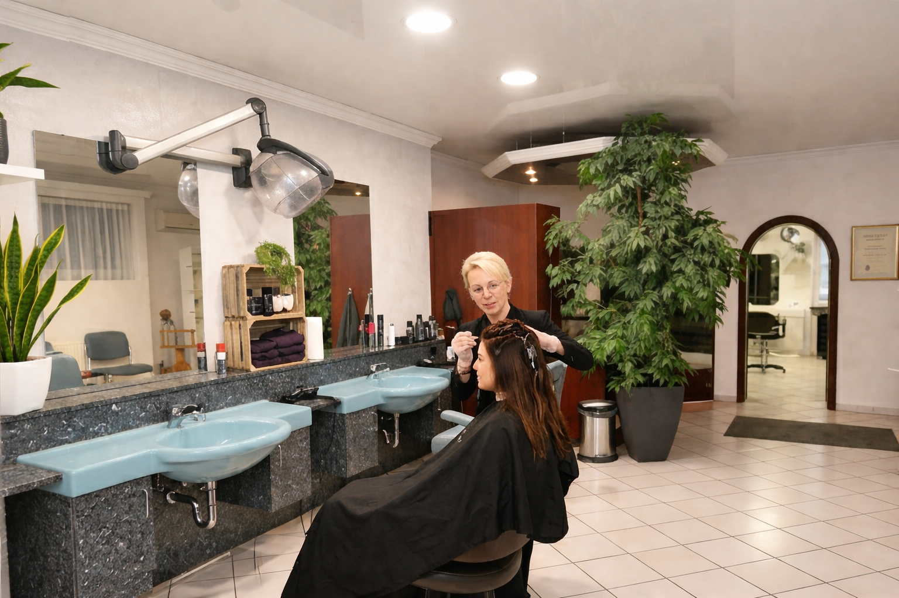
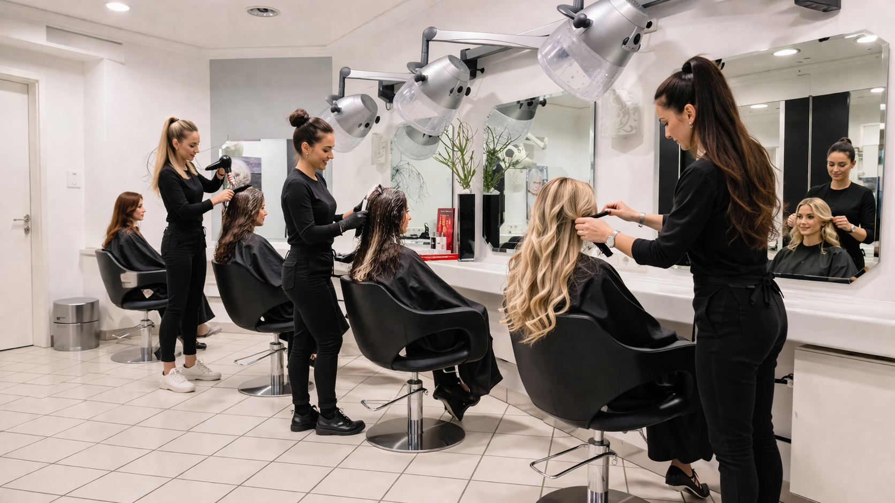

Vörs am Kiss-BalatonVörs ist die Fahrrad-Hauptstadt am Balaton und bequem über den neu ausgebauten Radweg erreichbar. Geführte Touren rund um den Kiss-Balaton und die Rundtour zum Büffelreservat Kapolnapuszta machen den Ort zu einem idealen Ziel für Aktivurlauber.

KulinarikHier trifft regionale Küche auf echte Genussmomente. Das Dampfnudelparadies am Balaton, ein großes Kuchenbuffet und moderne Gastronomie sorgen für entspannte Pausen mit Geschmack.

Home of the BembelVörs ist in Ungarn die Adresse für Bembel-with-Care. Der traditionelle Apfelwein aus 100 Prozent Äpfeln ist in vielen Sorten erhältlich und lässt sich im Sommer wie im Winter genießen.

ÜbernachtungOb mit Zelt oder Wohnmobil, Vörs bietet moderne Stellplätze und entspannte Camping-Erlebnisse für Gäste, die Natur und Freiheit miteinander verbinden möchten.

Weihnachten in VörsZur Adventszeit zeigt sich Vörs von seiner festlichsten Seite. Die große Weihnachtskrippe, der traditionelle Markt und handgemachte Kunstwerke machen den Ort zu einem besonderen Ziel im Winter.

Natur & KulturDas Kiss-Balaton Haus, das Heimatmuseum Talpasház und die einzigartige Vogelwelt im Nationalpark verbinden Naturerlebnis und regionale Geschichte auf besondere Weise.